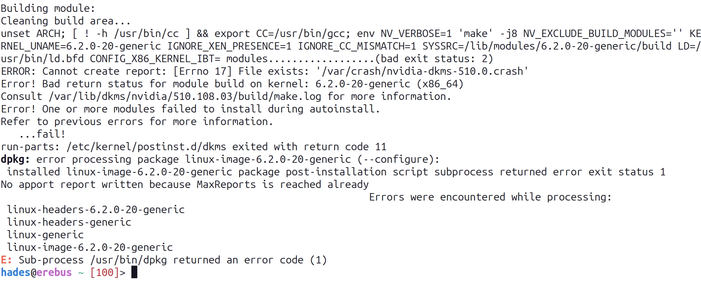
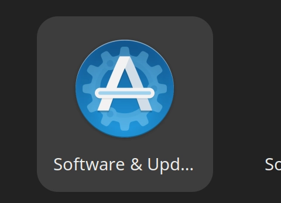

Kernel Panic At the Lunar Lobster
Table of Contents
What Is This About?
I got a notification yesterday (May 3, 2023) that there's a new version of Ubuntu out (Lunar Lobster - 23.04) so I ran do-release-upgrade while watching a video (An Honest Liar) about James Randi. At the end of the upgrade there was some kind of error message about not being able to configure the Linux headers, which in retrospect should have worried me, but I was distracted so I just dismissed it. Then today when I booted up the computer I got an error message saying Kernel Panic - Not syncing: VFS: Unable to mount root fs on unknown-block (0,0). I managed to get it working (eventually) but now that Ubuntu's been around long enough and search engines seem to be choked with outdated answers I thought I'd document what I did in case it happens on another update.
First Get It Working
The first thing I tried was to follow the answers on this Stackoverflow page. The only thing this did was get my computer up and running again - which is, I suppose a big thing, not to be minimized, but there's a lot of stuff on that page and the only relevant parts were:
- Reboot
- At the menu that comes up choose "Advanced Options for Ubuntu"
- Pick a prior version of the Linux kernel (5.19.26 in my case) and let it finish starting up.
Not a Solution But A Finger Pointing
The first thing I tried from that page was from this answer:
sudo dpkg --configure -a
This gave me error processing package linux-image-6.2.0-generic (--configure). So I searched some more and tried the suggestion from this askubuntu answer:
sudo dpkg --purge linux-image-6.2.0-20-generic
This gives an error along the lines of "dependency problems, not purging". Oi. So then I tried:
sudo apt autoremove
This gave me another error:

This time in the error message it said to check out /var/lib/dkms/nvidia/510.108.03/build/make.log which turned out not to have any useful information (to me, anyway) but it did tell me that there was something going on with my nvidia drivers that was causing the configuration of the new Linux kernel to fail.
Blame It On the Drivers
"Something going on with my nvidia drivers" being a little too vague for me to troubleshoot, I decided to go the brute force way and uninstall the nvidia-drivers. This actually proved a little harder than I thought it would be (which seems to always be the case, maybe I'm too optimistic about this kind of stuff). Every time I tried to run
sudo apt remove nvidia-driver-510
apt would try and configure the Linux kernel and run into the same error that I had before and exit without uninstalling the driver. Some kind of chicken and the egg thing. So then I tried dpkg instead of apt first:
sudo dpkg --purge nvidia-driver-510
sudo apt autoremove
dpkg managed to uninstall the driver and running apt autoremove not only cleaned out the unused packages but also triggered the kernel configuration and this time… no errors.
From Nouveau To Nvidia
After a reboot it started up okay and this time uname -r showed that I was using the newer kernel (6.2.0-20-generic). Yay. But now when I tried to re-install the nvidia drivers neither ubuntu-drivers nor apt seemed to know that they existed. It turns out that updating the ubuntu installation removes the proprietary drivers from the apt sources. So I launched the "Software & Updates" GUI.

And checked the "Proprietary drivers for devices (restricted)" button.

I chose to update the apt listing when I closed the GUI and then installed the drivers at the command line:
sudo ubuntu-drivers install
And then, after another reboot, now it works (I checked with nvidia-smi).
And the End
I haven't run any tests other than using the system but this seems to have fixed the problem. Well, the problem with the kernel, updating also broke all my python virtual environments, but, oh, well, better than a kernel panic, I suppose.